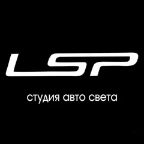
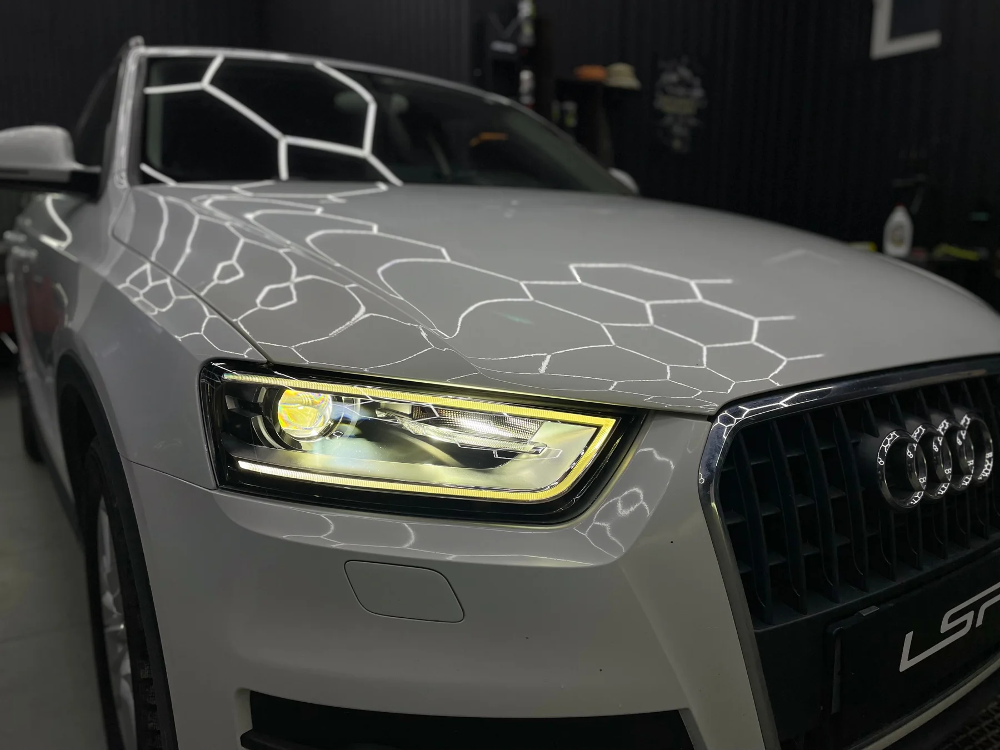
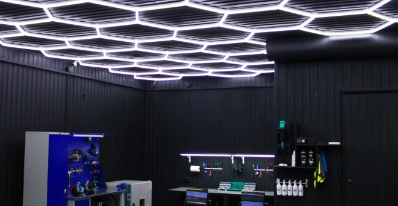

Bi-LED линзы
Установка и замена линз головного света. Подбираем решение под вашу оптику.
Уточнить стоимость ↗
+7 (908) 904-25-30
Обновляем автомобильную оптику.
От замены линз до восстановления и защиты фар.
Решаем конкретную задачу: тусклый свет, мутные стёкла, запотевание или обновление линз.
Установка и замена линз головного света. Подбираем решение под вашу оптику.
Уточнить стоимость ↗Шлифовка и полировка стёкол снаружи и изнутри.
Уточнить стоимость ↗Диагностика причин запотевания и восстановление герметичности фары.
Уточнить стоимость ↗Прозрачная полиуретановая плёнка для защиты стёкол фар.
Уточнить стоимость ↗Настройка направления и светотеневой границы после работ.
Уточнить стоимость ↗Головной свет, задние фонари, подсветка номера и салона.
Уточнить стоимость ↗
В LSP занимаемся установкой линз, восстановлением стёкол, защитой и настройкой автомобильных фар.
Подбираем решение под вашу оптику: меняем линзы, восстанавливаем стёкла, защищаем фары плёнкой и регулируем свет. Подробности и фотографии каждого этапа — в наших кейсах.
Приезжайте на Громова, 109 ↗Расскажите, какая у вас машина и что хотите изменить в свете.
Уточняем состояние оптики, состав работ и стоимость.
Выполняем согласованный комплекс: линзы, восстановление или защита.
Регулируем фары после работ и показываем результат.
«Свет стал просто бомба, да и за фары теперь не стыдно.»
Установка Bi-LED линз и полировка: клиент отмечает более яркий свет, лучшую видимость обочины и правильный световой пучок.
Восстановление фар, защита и замена ламп: клиентка благодарит мастеров и отдельно отмечает чистоту и порядок в студии.
Расскажите, что хотите изменить в свете вашего автомобиля. Обсудим состояние оптики, решение и состав работ.
+7 (908) 904‑25‑30